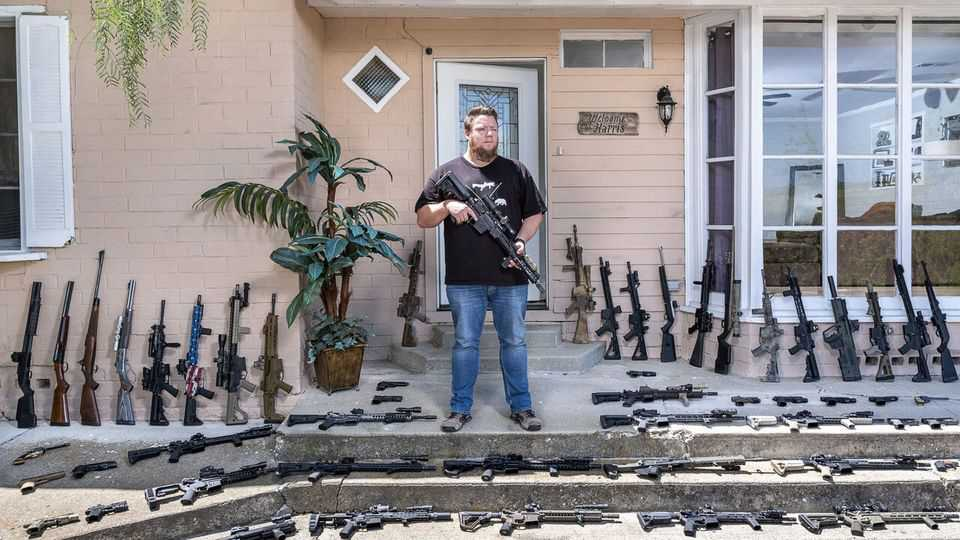

Malcolm Gladwell and Harel Shapira are up in arms about guns
But can you be convinced of their views, if you are not already on their side?

Oct 8th 2026
FEW THINGS about Americans baffle foreigners more than their attachment to guns. Thirty years ago mass shootings in Australia and Scotland prompted both countries to tighten their gun laws; today, legally owning a handgun in Britain is almost impossible and getting one in Australia requires licensing, registration and a background check. In America, meanwhile, 40% of people live in a household with a gun, and each year more than 1m Americans become first-time gun owners. What explains this form of American exceptionalism? Two new books try to answer that question in very different ways.
Malcolm Gladwell, a prolific Canadian journalist who lives in America, has written a book that follows his familiar formula: ten short chapters crammed with anecdotes wrapped around nuggets of wisdom, like social-science fortune cookies. “The American Way of Killing” emerged from a series on his popular podcast, “Revisionist History”; annoyingly, it reads like it, with whole chunks of raw transcript slapped down on the page.
But, as with most of Mr Gladwell’s books, readers will come away thinking differently about the world. For instance, one of the few gun-control measures most Americans support is a ban on assault weapons. Mr Gladwell argues it would do little; most gun deaths involve handguns, which are readily available. Many on the American left would be happy to shrink police forces; Mr Gladwell notes that European cities tend to have larger police forces than similarly sized American ones and argues that keeps them safe, because their presence helps prevent crimes.
Mr Gladwell’s usually fluid writing has a shrill, rebarbative edge. He accuses Americans of “moral recklessness”, misdiagnosing “the nature of the violence that plagues their streets” and having a “fundamentally dishonest way” of discussing guns. “Not only do Americans get things wrong, but they seem uninterested in ever getting things right,” he huffs. Those who share his views on guns may enjoy his scolding, but his tone will turn some off.
Harel Shapira, by contrast, does far more showing than telling. A sociologist at the University of Texas, Mr Shapira spent years taking firearms-training classes in Texas to better understand why and how guns appeal to ordinary Americans. The instructors are dedicated professionals, mostly conservative but not nutters “running tactical drills deep in the woods in preparation for a battle with the deep state”. Both students and instructors sincerely believe that owning and knowing how to use guns will help keep them safer.
Mr Shapira and his fellow students do not just learn to load, aim and clean their weapons. They are also taught “the ‘warrior mindset’" or “the state of mind that we ‘good guys with guns’ were meant to embrace”. The school’s founder says that there are three types of people: sheep (passive), wolves (predatory) and the type he wants them to be: sheepdogs, who protect the flock. The police are a “reactive force” who often arrive too late; a sheepdog has to always be prepared for danger.
The school’s founder encourages them to carry their guns loaded. “There are bad guys everywhere,” he warns. Many of Mr Shapira’s fellow students fear petrol stations, where they feel vulnerable when they get out of their cars to refuel. For his instructors, Mr Shapira writes, “a diverse and vibrant public sphere does not hold the promise of a fulfilling life. It holds only the potential for a violent death.”
The consequences of a mindset that encourages an armed response to ubiquitous danger quickly becomes clear. One of his instructors shot and killed a young black man who broke into his home. It turned out he was a mentally disabled resident of a nearby group home who had escaped and ran down the street, banging on front doors. When the young man, dishevelled and probably “cold, frightened, disoriented”, did not heed the instructor’s orders to leave, he shot him five times.
Was the instructor a “good guy with a gun”? Some thought so: he faced no charges. Mr Shapira is not so sure. But what makes his book so exceptional is that his personal doubts did not stop him from listening to his instructor’s story with empathy, curiosity and understanding—all of which he extends to his subjects.
In that sense, these two books are not just about guns; they present two ways of engaging in culture-war arguments. Both authors dislike guns and presumably wrote their books to persuade others of their beliefs. Mr Gladwell tries to scold his opponents into submission, which seldom works. Mr Shapira, however, listens and shows his readers a world full of complex people rather than caricatures.
Whether any author can change minds on this issue is a bleaker question. A majority of American adults has been threatened with a gun, seen someone shot or had a family member killed by a gun, according to KFF, a think-tank. Yet in recent years American gun laws have become only laxer, with states embracing “permitless carry” of firearms. America’s gun-violence problem will last until voters follow Australians and Britons—and decide they have had enough. ■